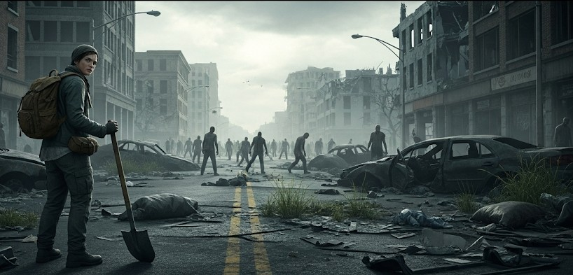

How to Survive a Zombie Apocalypse
Objective
Use a tongue-in-cheek “zombie outbreak” to train real survival habits: clean decisions, quiet movement, supply discipline, and tight team comms. If you can thrive when the undead show up, you’ll crush a blackout or storm.
Scenario (Example)
Example: Local news reports “aggression clusters.” Within 24 hours, hospitals overflow. Power is spotty, stores are overrun, and emergency channels say “shelter in place.” Your team of four has two go-bags, a vehicle at half a tank, and a rooftop exit.
Threat Model (Pick Your Flavor)
- Slow shamblers: Predictable, numerous. Noise discipline and barricades matter most.
- Fast biters: Fewer, more dangerous. Speed, spacing, and escape routes are everything.
- Humans: The real boss level—desperate, opportunistic, sometimes organized. Use caution on contact.
72-Hour Plan
- Hour 0–6: Secure & Sense-make. Lock down one room, kill interior lights, cover windows. Inventory water/food/medical. Monitor radio and local channels. Establish a rally point and code phrase.
- Hour 6–24: Scout & Decide. Two-person recon at dawn: fuel status, egress routes, nearby crowds. Decide: stay 72 hours or relocate to a safer zone (higher, drier, fewer choke points).
- Hour 24–72: Move or Fortify. If moving: pre-staged bins, disciplined load plan, quiet departure. If fortifying: barricade low-noise, create inner refuge, set watch schedule and “quiet hours.”
Movement (Urban)
- Noise & light: Tape rattles, secure straps, no clanking metal. Red or masked light only.
- Spacing: 5–10 m between people; visual contact. One navigator up front, one tail safety.
- Routes: Avoid long straight streets, glass corridors, and funnel points (bridges, narrow gates). Use alleys and courtyards. Keep at least two detours in mind.
Safe Havens
- Elevation: Upper floors with limited stair access; remove/disable one stair flight if possible.
- Visibility: Overwatch angles on approaches without skylining yourselves.
- Water & sanitation: Containers, bleach, bucket system, and a hand-wash station at the door.
Contact Protocol (People)
- Hands visible, stance bladed, no sudden moves. One speaker, everyone else quiet.
- Trade only in daylight with distance and drop points. Never disclose full headcount or stores.
- Pre-set go/no-go triggers (weapons displayed, group size, intoxication) to disengage immediately.
Medical & Exposure
- Bleeding control: Tourniquet, wound packing, pressure.
- Bites (fictional): Treat like contaminated lacerations; isolate until sure of status (or, you know…movie rules).
- Infection control: Hand hygiene beats heroics. Sanitize high-touch surfaces daily.
Loadout (Practical, Not Cinematic)
- Primary: Sturdy footwear, gloves, eye protection, headlamp, radio.
- Tools: Multi-tool, tape, cordage, pry bar (urban), fixed-blade (field repairs, wood).
- Consumables: 2–3 L water/day, high-calorie snacks, electrolytes, batteries.
- Admin: IDs, cash, map, marker, small notebook with comms plan.
Comms & Signals
- Primary channel + privacy code, plus a backup channel and a silent signal (e.g., two knocks = clear).
- Two daily windows for radio checks and neighborhood updates.
- Rally points A/B with time boxes: “If separated, RP-A at 18:00; RP-B at 20:00.”
Checklist
- People: headcount, skill roles (navigator, medic, security, logistics)
- Environment: exits, choke points, quiet routes, alternate shelter
- Resources: water, calories, heat/light, medical, tools
- Comms: radios, codes, windows, rally points
- Morale: routines, sleep discipline, one comfort item per person
Contingencies
- Breach at night: Retreat to inner room; use light discipline; exit via pre-staged rope/secondary door.
- Vehicle blocked: Cache gear along planned foot route; never put all supplies in one basket.
- Injury to key role: Cross-train now—rotate navigator/medic duties during calm periods.
Pro Tips (Fun but Useful)
- Silent is survival: Duct-tape anything that rattles; wrap tools with cloth.
- Don’t be the hero soundtrack: No yelling, no victory whoops. Save lungs for movement.
- Think like a scout: Curiosity kills—clear corners, mirror checks, listen first.
- Cache candy: Morale spikes reduce dumb decisions. Science-ish.
After-Action
Debrief nightly: What drew attention? Where did we slow down? Which route worked best? Update your load plan and comms card. Zombies don’t learn—people do.
← Previous | All Articles | Next →